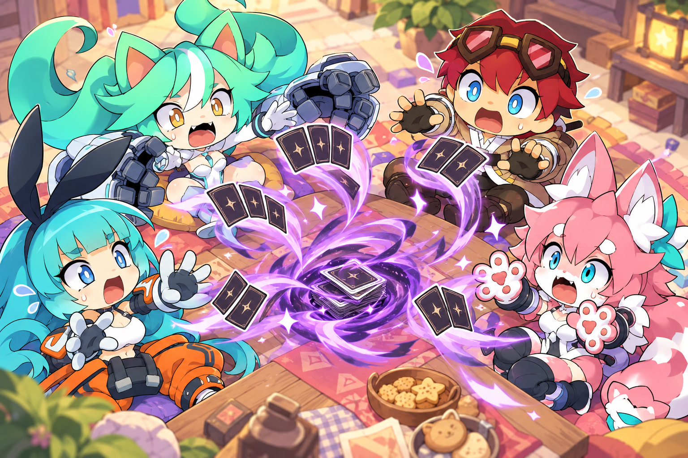
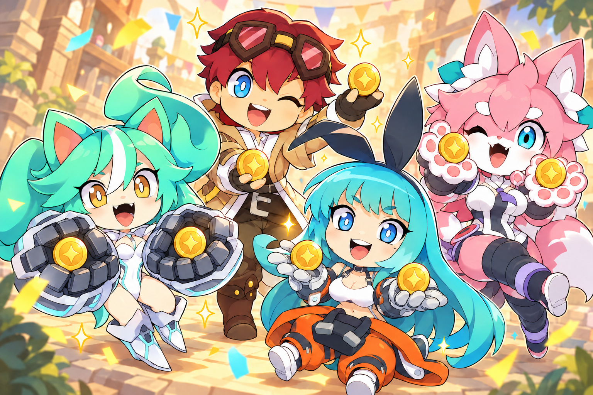
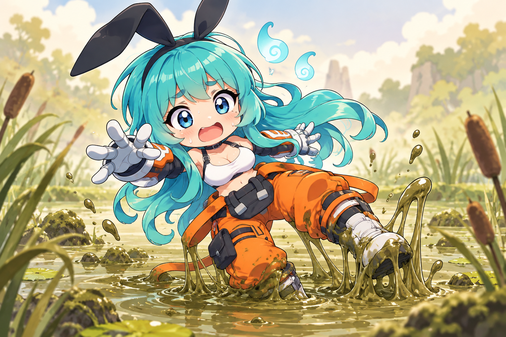
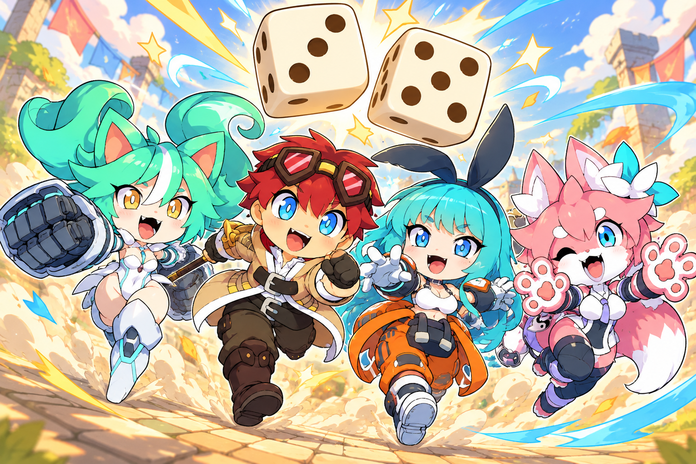
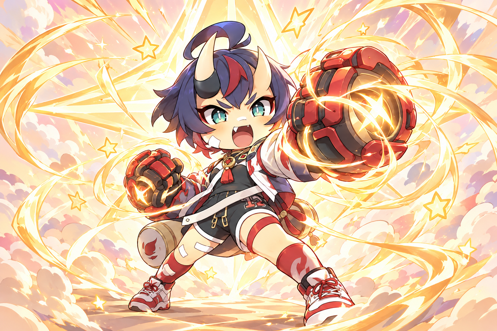
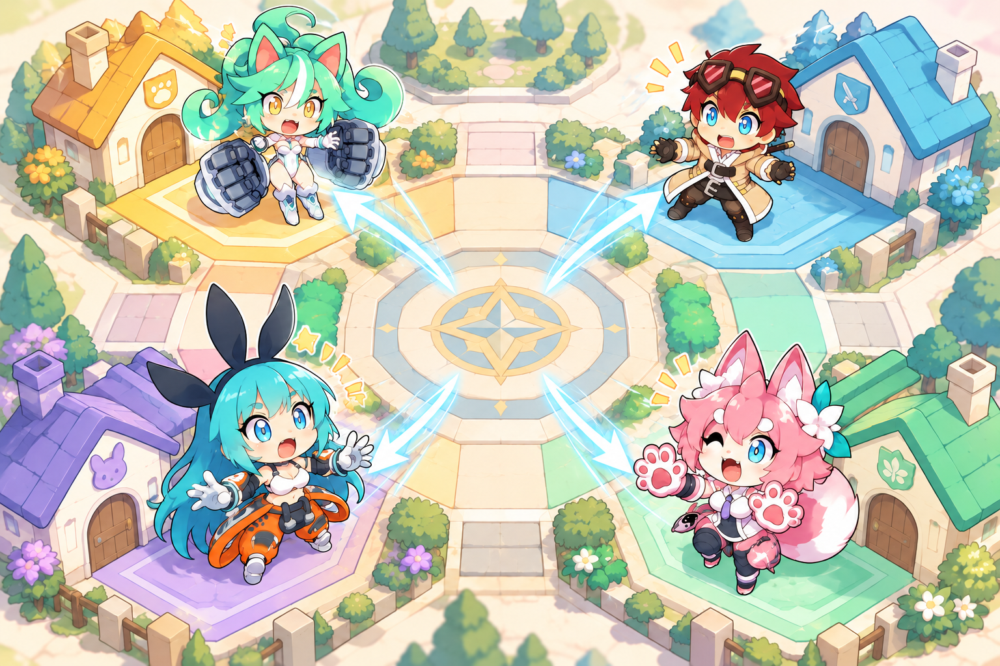
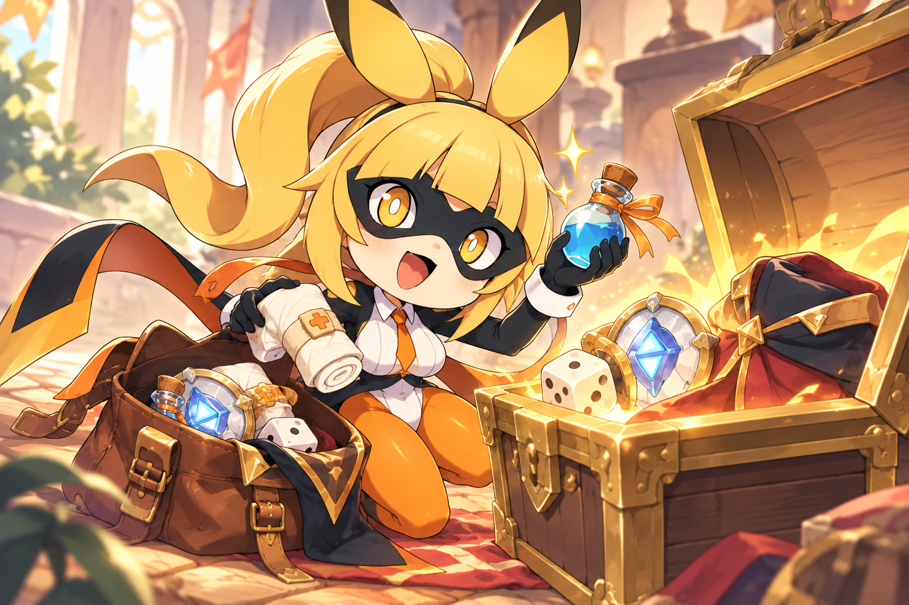
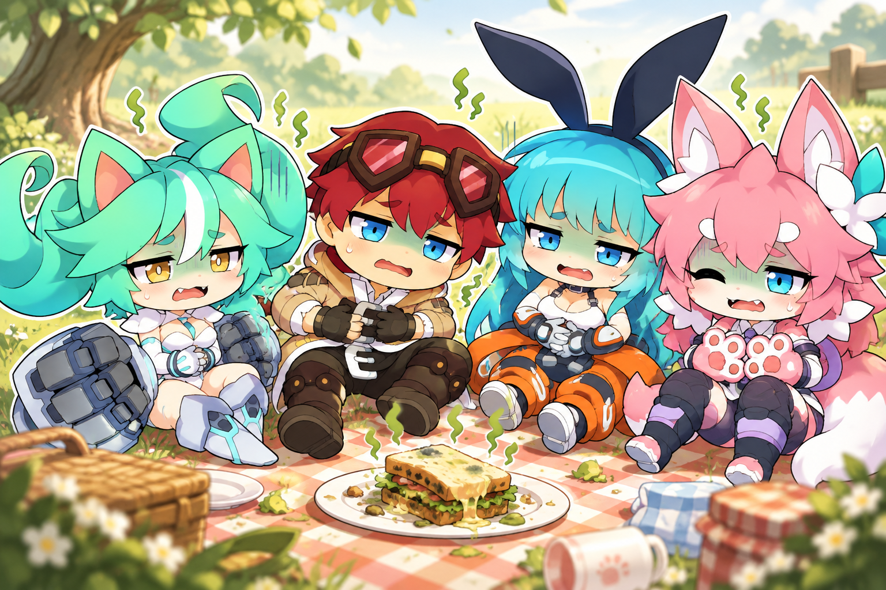

모든 플레이어가 무작위로 패를 3장씩 버린다.

모든 플레이어가 2코인씩 얻는다.

이벤트를 밟은 플레이어는 FP를 2 잃는다.

모든 플레이어가 다음 주사위를 굴릴 때 2개 굴린다.

이벤트를 밟은 플레이어는 FP를 9 얻는다.

모든 플레이어는 자신의 거점으로 돌아간다. 거점 효과는 발생하지 않는다.

이벤트를 밟은 플레이어는 아이템 창이 가득 찰 때까지 무작위 아이템을 얻는다.

모든 플레이어는 3턴 동안 매 턴 500 데미지를 받는다.